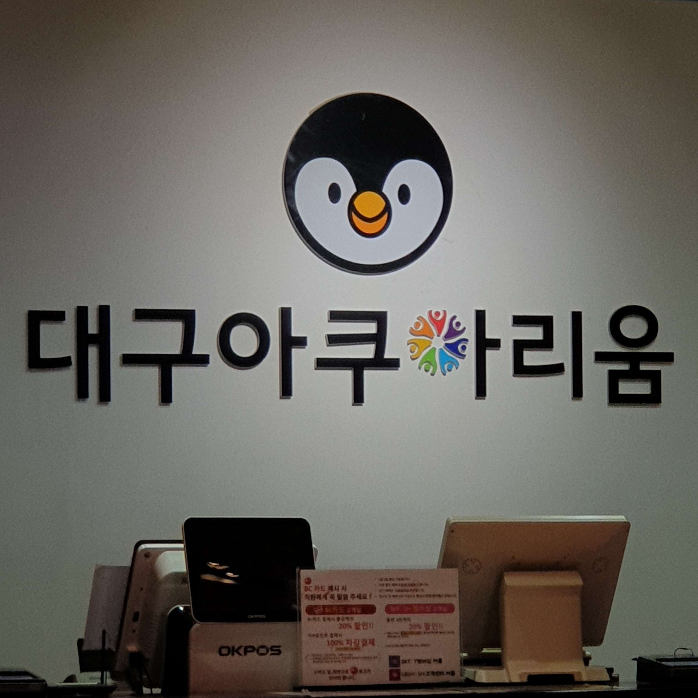
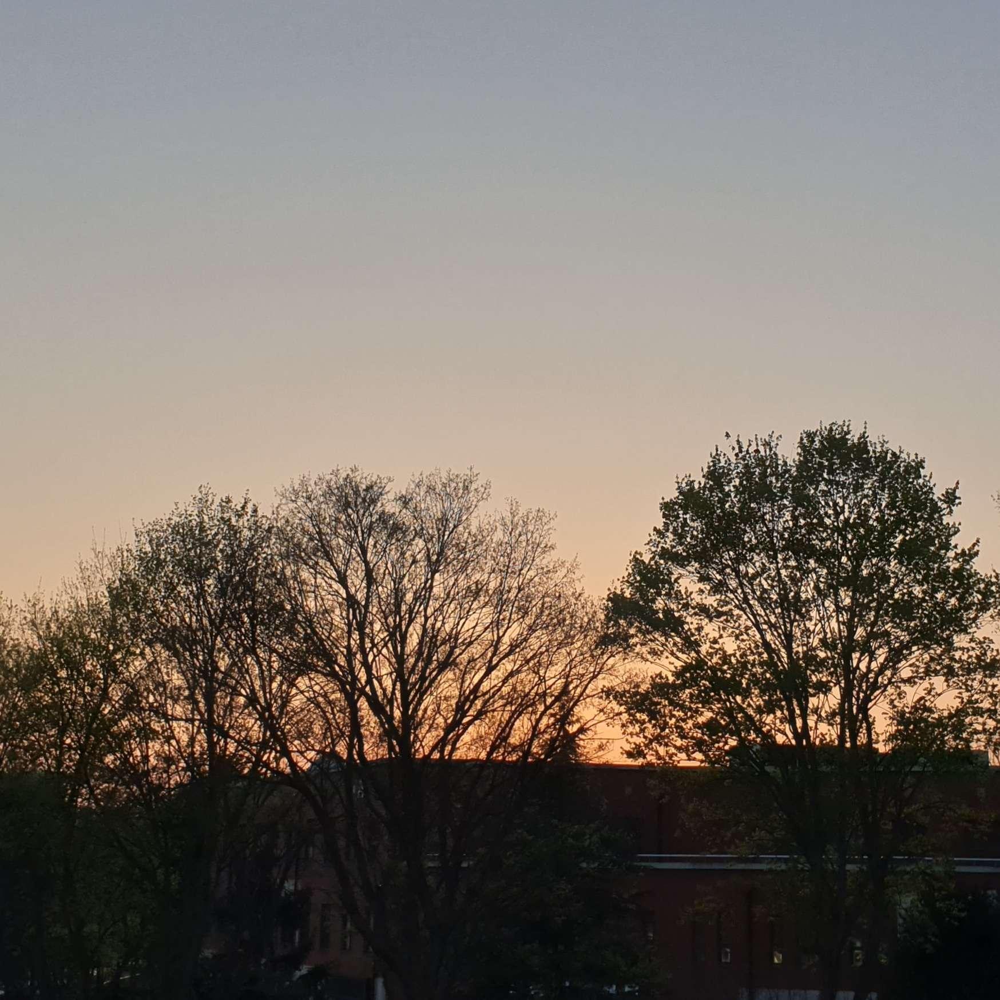
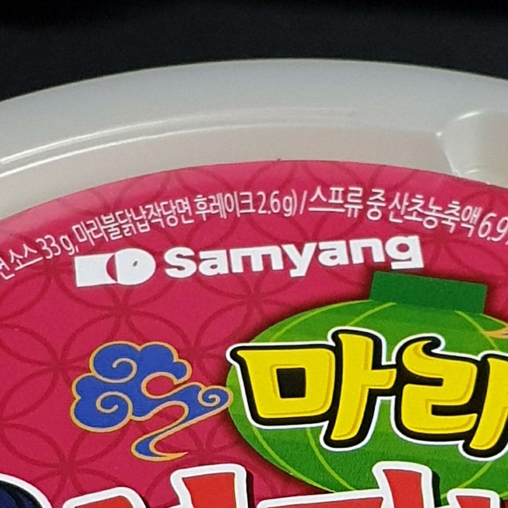
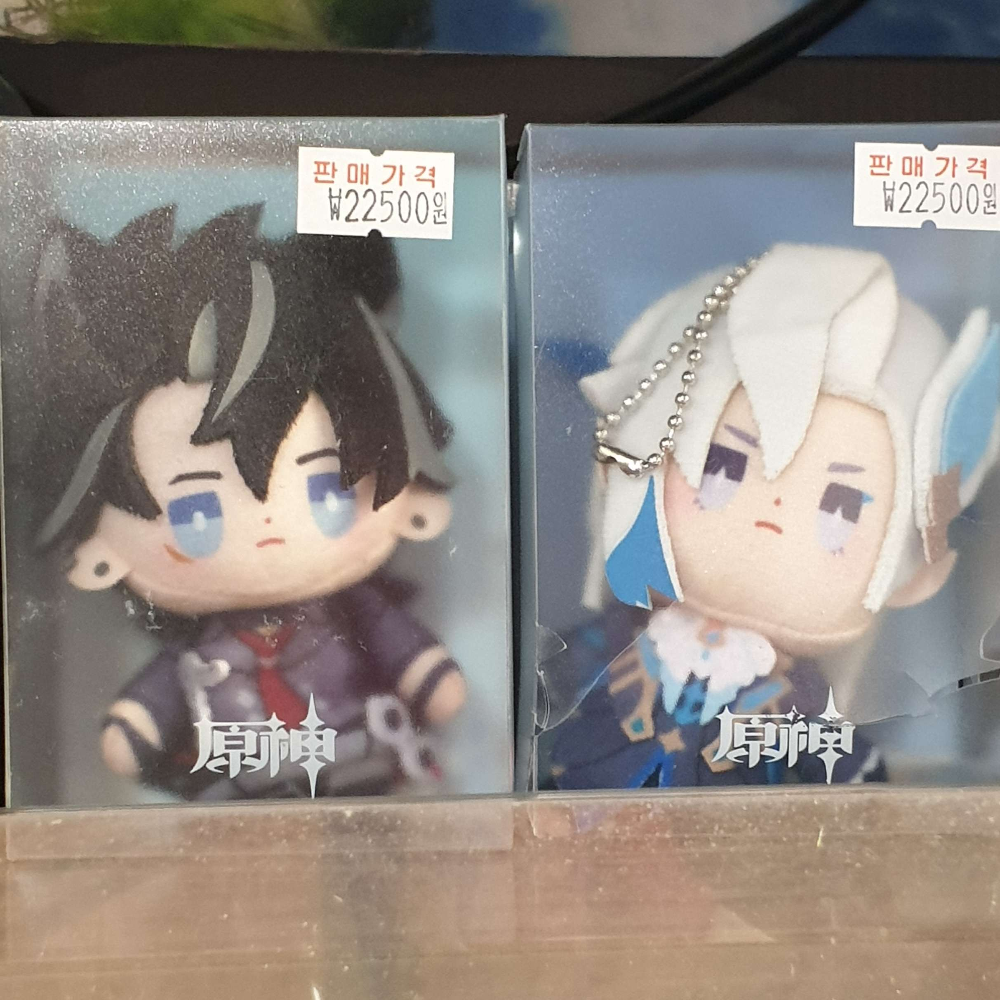
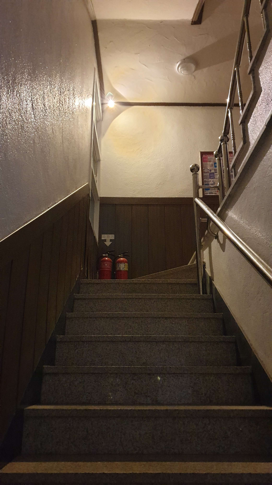
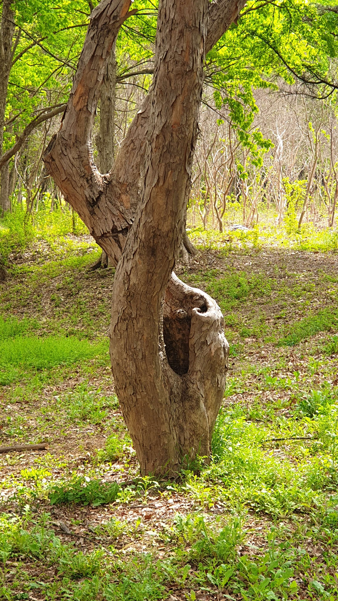
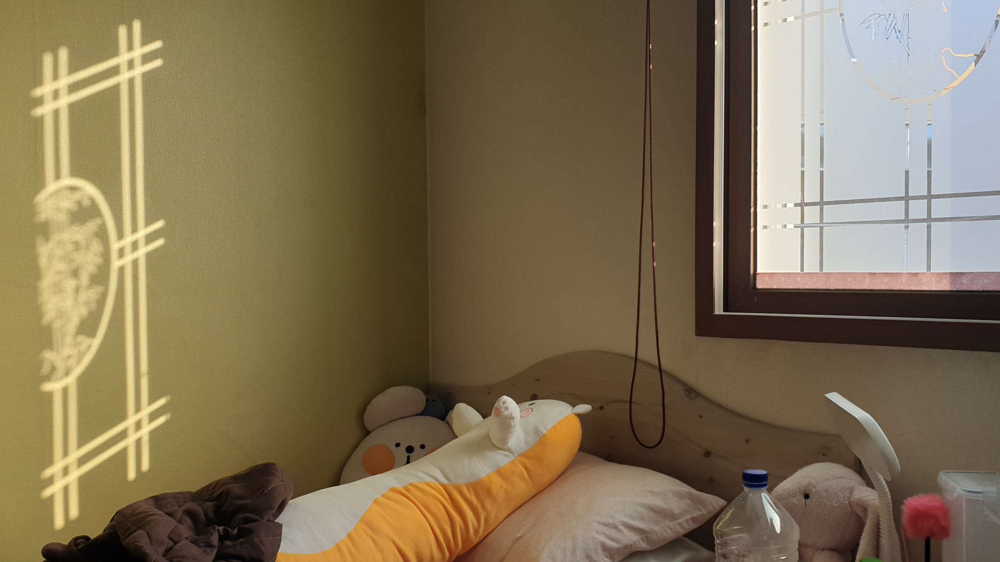
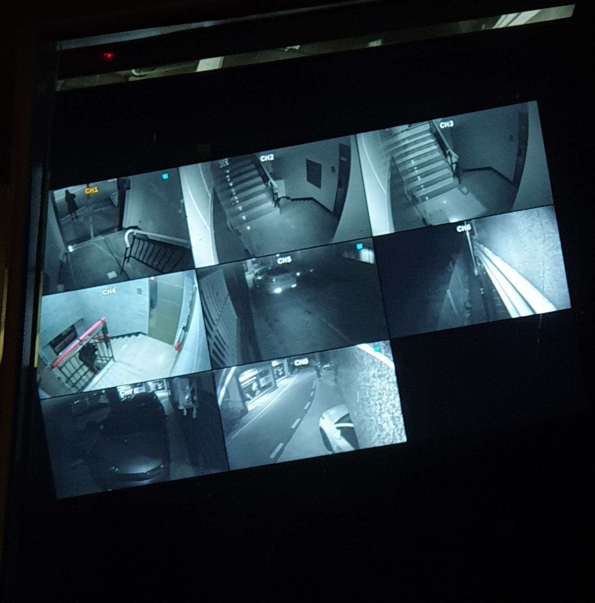
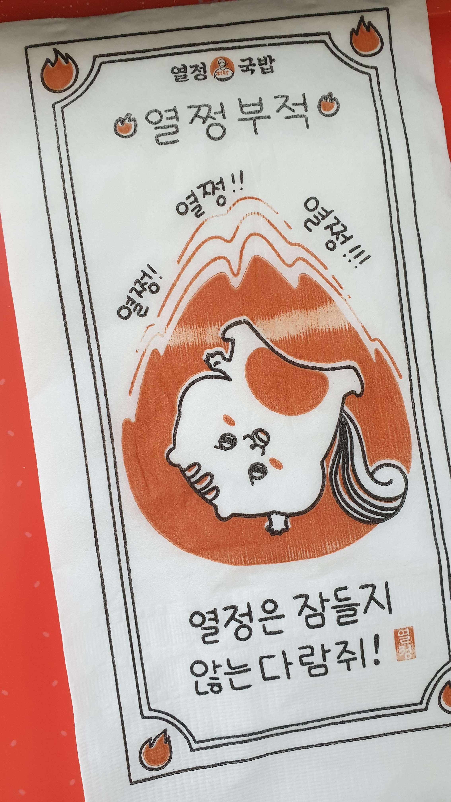

‘대구아쿠아리움’의 로고
‘대구아쿠아리움’의 로고 사진이다. 나는 문자 ‘ㅇ’이 원형의 사람들로 대체되어 꽃 모양을 만드는 방법을 발견했다. 수족관이라서 왜 ‘ㅇ’ 대신 그 위에 있는 펭귄으로 바꾸지 않았을까 하는 생각이 들었다. 무지개 모양의 의미를 찾아봤는데 아무 것도 못 찾았다. 흥미로운 디자인 선택이다.
귀여운 자석

이건 자석걸이입니다. 이 디자인이 너무 귀엽다. 그것은 나로 하여금 이와 같은 사각 자석에 대해 가능한 모든 디자인을 생각하게 만들었다. 고양이가 앉아 있는 창문을 만들 수도 있고 세트를 만들어 귀여운 디자인으로 냉장고를 꾸밀 수도 있다. 창의적인 생각을 하게 만든 귀여운 디자인 선택이다.
엽서 배경처럼
이 일몰 사진은 마치 엽서 같다. 전경에 있는 나무들은 일러스트레이터나 포토샵에서 만들 수 있는 그래픽 디자인처럼 보인다. 상단에 글자를 추가하면 엽서처럼 보일 것이다. 노을의 주황빛과 대비되어 나무들이 어둡게 보이는 모습이 정말 눈길을 끌었다. 하늘이 너무 회색이 아니고 더 밝아 보였다면 완벽한 자연 엽서 사진이 만들어졌을 것이다.
‘삼양’의 새로운 로고?
삼양 컵라면 뚜껑을 찍은 사진이다. 로고가 너무 단순화되어서 눈길을 끌었다. 또 다른 흥미로운 점은 글자 왼쪽에 있는 기호였다. 내 눈에는 글자가 ‘KD’로 보이도록 정사각형과 원이 겹쳐져 있다. 인터넷에 ‘KD’라고 적혀 있는지 ‘KC’라고 적혀 있는지 찾아봤는데 불닭라면 이미지만 나왔다.
원신인형
원신 캐릭터 ‘Wriothesely’와 ‘Neuvillette’의 작은 인형 복제품입니다. 이것은 가격이 비쌀 뿐만 아니라, ‘누빌레뜨’ 인형의 디자인이 매우 재미있다는 것입니다. 그들은 그의 턱을 아주 길게 만들었다. 이 인형뿐만 아니라 모든 ’누빌레뜨’ 인형에도 있다. 턱이 긴 디자인이 아닌데 왜 이런 디자인을 선택했는지 궁금한다.
PT(공포게임)처럼
계단 사진을 보니 PT라는 공포 게임이 생각났다. 실제로 보면 사진보다 훨씬 어둡게 나와서 어두운데서 사진 찍는 게 무서웠다. 우리 건물은 최근 CCTV 카메라용으로 새로운 희미한 주황색 조명을 설치했다. 너무 어두워서 무서운 분위기를 풍긴다. 벽의 밝은 색상은 무서운 분위기를 줄여준다.
뒤틀린 나무
집에 가는 길에 이 나무를 보고 정말 눈길을 끌었다. 그것이 비틀어지는 방식 때문에 나에게는 의자처럼 보인다. 이 나무를 처음 봤을 때 뭔가 환상적인 느낌이 들었다. 누군가가 자연을 테마로 한 카페를 만든다면 좌석이 이런 모습일 것 같다는 생각이 들었다. 그것은 좌석에 대한 재미있는 디자인과 같다.
햇빛
나는 일어나 창문을 열었다. 그리고 블라인더를 올리면 창문 벽지를 통해 들어오는 햇빛이 이 디자인을 만들어준다. 햇빛이 보여주는 벽지 디자인이 너무 선명하게 눈에 들어와서 빛과 창문을 같은 사진에 넣어서 그 효과를 최대한 표현하려고 노력했다. 창문을 통해 햇빛이 완벽하게 들어오는 모습이 너무 예뻤다.
’관찰의무’게임처럼
저녁을 먹고 집에 가는 길에 또 CCTV 영상이 눈에 들어왔다. 예전보다 밖이 많이 어두워져서 호러게임 효과가 훨씬 더 효과적이였다. CCTV 영상의 색상은 정말 ‘관찰의무’(공포게임) 효과를 가지고 있다. 색상 팔레트도 게임에 사용된 것과 동일해 눈길을 끌었다.
귀엽고 재미있는 조직
배달로 국밥을 주문했고 이 조직도 같이 왔다. 정말 흥미롭고 재밌있다. 식사용 조직에 이런 디자인은 처음 봤다. 귀여운 그래픽 디자인인데 왜 이렇게 ’열정적인’ 디자인이 식당에 어울리는지 이해할 수 있다. 식당 이름은 ‘열정국밥’이라서 그렇다.